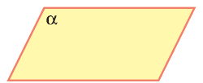
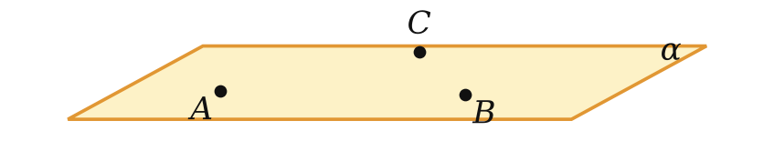
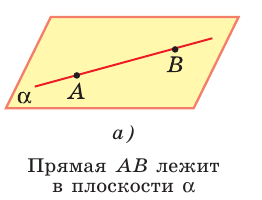
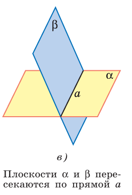
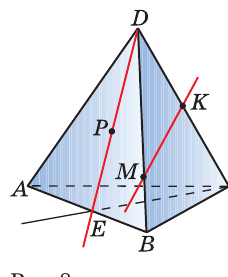
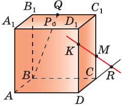

Точка, прямая, плоскость — и три правила, на которых держится вся геометрия пространства
Планиметрия — фигуры на плоскости.
Стереометрия — фигуры в пространстве: куб, пирамида, шар.

| Что | Как обозначаем | Пример |
|---|---|---|
| Точка | большая латинская буква | A, B, M |
| Прямая | маленькая латинская или две точки | a, прямая AB |
| Плоскость | греческая буква или три точки | α, β, плоскость ABC |
| Лежит в | ∈ (точка), ⊂ (прямая) | A ∈ α, a ⊂ α |
Невидимые линии чертим штрихом.
Утверждения, которые принимаем без доказательства
Табурет на трёх ножках не шатается.

Карандаш, положенный на стол двумя концами, ложится целиком.

Две страницы раскрытой книги сходятся по корешку.

Две плоскости не могут иметь ровно одну общую точку: либо ни одной, либо целая прямая.
Ещё два способа задать плоскость
По рисунку назовите:

По рисунку назовите:

Каждый шаг — со ссылкой на аксиому или теорему